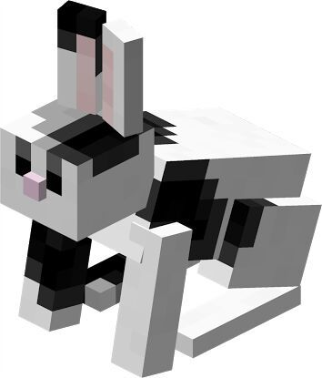
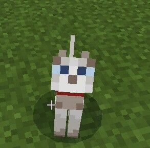
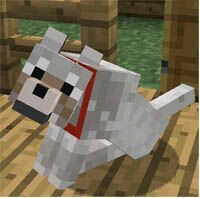

Acerca de nosotros
Este es un proyecto de práctica para el laboratorio de Github en la asignatura
Este es un proyecto de práctica para el laboratorio de Github en la asignatura
|  |  |  |
|---|---|---|
Johnny Chen
|
Nicole Valdés
|
Yeshua Zapata
|